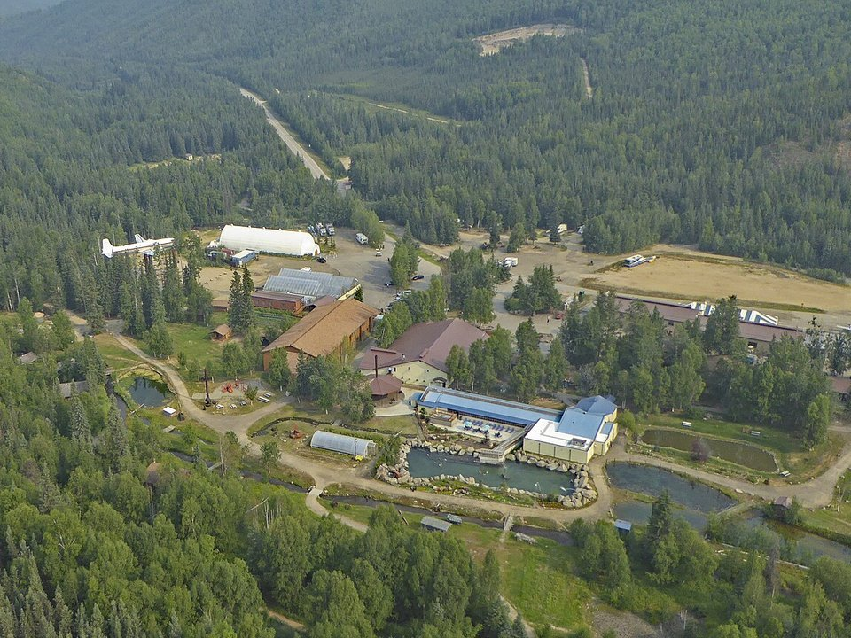

Chena River · Lodge
Pike’s Waterfront Lodge
A riverside lodge near the airport.
Official details for Pike’s Waterfront LodgeNorthern lights and hot springs.
Fairbanks is the heart of Interior Alaska, a gold-rush town on the Chena River with summer days that never get dark and winter nights lit by the aurora. Land at Fairbanks International, ride the Riverboat Discovery, drive an hour east to Chena Hot Springs Resort to soak outdoors and watch for the northern lights, and eat at the Pump House on the river.

Time illustration: direct distance at 150 KTAS plus 15 minutes for departure and arrival, matching the discovery page. Use ForeFlight for your actual flight plan.
Check the weekend weather at both ends → Flight category, your minimums and the crosswind on the best runway.
PAFA, Fairbanks International, is a towered airport at 439 feet with an 11,800-foot runway, a 4,510-foot general-aviation runway, a gravel strip and a float pond (02W/20W, 5,400 feet).
Fairbanks International Airport, Fairbanks, AK
Another FBO: FBO Fairbanks/Everts Fuel (907-474-9494). Summer wildfire smoke can reduce visibility; winter brings extreme cold and ice fog. No live fuel price is shown.
Interior Alaska flying: hot, smoky summer days from wildfires, long daylight in summer, extreme cold and ice fog in winter, and long distances between airports. Carry survival gear and file a flight plan. From the lower 48 this is an expedition, not a weekend: the usual route is the Alaska Highway through Canada (customs, eAPIS and Canadian survival-equipment rules), roughly a week each way. Most visitors are Alaska-based pilots, or fly commercially and book local air taxis and flightseeing.
Fairbanks, AK · airport 907-474-2500
Water lanes: 02W/20W, 5,400 × 100 ft, on the airport. Chena River (2Z5) is another public seaplane base in town.
Ice-free from about May to October.
Water landing rules, conditions and docking change; call the operator and check the chart supplement before you go.
Rates and availability need travel dates. Aurora season (late August to April) books up.
A riverside lodge near the airport.
Official details for Pike’s Waterfront LodgeA remote resort with an outdoor hot-spring lake and an ice museum.
Official details for Chena Hot Springs ResortPrices and availability for your dates, through our partner Stay22. This is an affiliate link: we may earn a commission at no cost to you. The picks above are never paid.
Reserve weekend dinners.
A historic gold-era pump house on the Chena River.
Official details for The Pump HouseRestaurants around Fairbanks.
Explore Fairbanks for More restaurantsFor aurora, go between late August and April, and stay up late.
An outdoor rock lake of natural hot water, and the Aurora Ice Museum.
Chena Hot SpringsThis prototype links to the local visitor site. It does not yet match events to your travel dates.
Dark, clear nights for the northern lights.
Explore Fairbanks for Aurora seasonA downtown street festival on the solstice.
Explore Fairbanks for Midnight Sun FestivalIce sculptures in Fairbanks.
Explore Fairbanks for World Ice Art ChampionshipsCheck the local calendar when choosing a weekend, and confirm dates and tickets with the organizer.
A sample Fairbanks weekend. Written for Alaska-based pilots and visitors already in Alaska. No bookings or availability confirmed.
Land at PAFA mid-morning.
The Riverboat Discovery.
Lunch on the river, then back to the airport.
Land at PAFA, subject to weather and your actual flight plan.
The Riverboat Discovery.
Dinner at the Pump House.
Drive to Chena Hot Springs.
A soak and the ice museum.
Aurora watching from the hot springs.
Breakfast by the river.
Allow time at the airport or dock.
Interior weather is extreme in winter; plan for cold-weather operations.
Drive to Chena Hot Springs.
A soak and the ice museum.
Aurora watching (late August to April).
These details make the difference between an appealing list and a usable getaway.
Lodging and a car first.
About 230 nm north.
Best from late August to April, away from city lights.
June to August for midnight sun; February to March for aurora.
Picks and links reviewed by WingAway Weekends. Hours, prices, menus and availability change often, so confirm directly with each place before booking. Spotted something out of date, or have a favorite we missed? Email us at hello@wingawayweekends.com.
WingAway Weekends helps you discover the destination. Use ForeFlight and current official aviation information for route, performance, weather, NOTAMs and preflight decisions. Flight planning and PIC responsibility stay with the pilot.
One fly-in weekend, a Fly to Lunch pick and the newest guides, about once a month.
Free. Unsubscribe anytime.